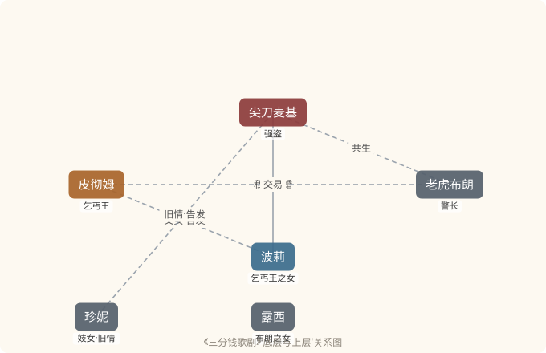

三分钱歌剧
一、基本信息
| 作者 | 布莱希特 |
|---|---|
| 成书/出版 | 1928年柏林首演（Britannica） Bertolt Brecht — Encyclopaedia Britannica（百科全书） |
| 国别/地区 | 德国 |
| 时代 | 现当代 · 20世纪 |
| 体裁 | 音乐剧（三幕） |
| 语言 | 德语 |

《三分钱歌剧》'底层与上层'关系图（人物关系图）
二、创作背景
改编自约翰·盖伊《乞丐歌剧》（1728）（Britannica：The Beggar's Opera 原型——通说待核）；与魏尔合作（Britannica：Collaborated with Kurt Weill on The Threepenny Opera (1928) and Mahagonny (1930)）——音乐剧的里程碑。
角色：强盗'尖刀'麦基（Macheath）、乞丐头目皮彻姆、女儿波莉——'底层'的权力与'上层'的犯罪互为镜像（通说）。
三、内容脉络
第一幕：麦基与波莉秘密成婚——乞丐王皮彻姆（波莉之父）告发（通说）。
第二、三幕：麦基两次入狱逃脱——最终上绞架又被'皇家赦免'（通说细节）——'世界是黑暗的，答案是模糊的'（通说）。
名曲：《尖刀麦基》（Mack the Knife，'哦，鲨鱼有牙'——原文意，公有领域）与《波莉的歌》（通说待核）。
四、主要人物表
| 人物 | 身份 | 说明 |
|---|---|---|
| 尖刀麦基 | 强盗·花花公子 | '文明'的罪犯——上层的镜像 |
| 波莉·皮彻姆 | 乞丐王之女 | '低层的公主' |
| 皮彻姆 | 乞丐王 | '乞丐'的企业家（通说） |
| 老虎布朗 | 警长 | 麦基的'老战友'——执法与犯罪共生 |
五、主题与艺术特点
- '犯罪'与'经商'的等式：'首先得养活人，然后才能讲道德'（原文意，待核）——资本主义讽刺。
- '间离'的开端：歌队直接对观众说话（通说）。
- 艺术特点：爵士乐/香颂配乐、标语式歌词、镜像结构。
六、影响与评论
- Britannica（Brecht 条）：The Threepenny Opera (1928) 与魏尔合作——音乐剧史里程碑。
Bertolt Brecht — Encyclopaedia Britannica（百科全书） - Mack the Knife 成为爵士标准曲（Louis Armstrong/Bobby Darin 等——通说待核）。
Bertolt Brecht — Encyclopaedia Britannica（百科全书） - 中译：李健鸣等译本（通说待核）。
Bertolt Brecht — Encyclopaedia Britannica（百科全书）
七、阅读建议
难点
- 魏尔的音乐与布莱希特的歌词不可分——听原版录音。
- 《乞丐歌剧》原型——对照 Gay 原作。
- 《布莱希特戏剧选》（人民文学出版社/中国对外翻译，通说待核）。
- 英译：Ralph Manheim & John Willett（通说待核）。
读剧本+听 1954 柏林剧团录音（通说待核）→ 对照《乞丐歌剧》→ 读'史诗剧场'理论（《戏剧小工具篇》通说待核）。
八、待核实
- 1928年8月31日 Theater am Schiffbauerdamm 首演（通说）细节待核。
- 中译本信息待核。
- Mack the Knife 录音史待核。
本页主要来源
布莱希特的其他收录作品：三分钱歌剧